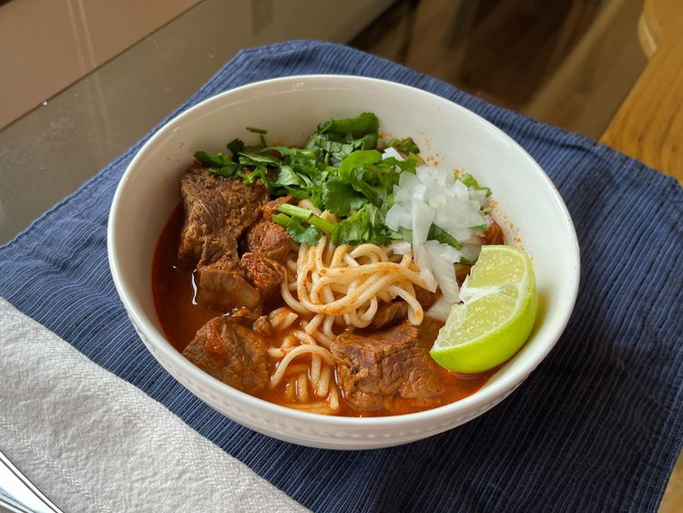

Beef Birria Ramen

This beef birria ramen is a rich, spicy Mexican beef birria served as a Japanese ramen noodle bowl. Topped with fresh cilantro, onion, and a squeeze of lime, an unassuming broth delivers intense flavors while tender beef and noodles offer satisfying comfort in every bite.
Ingredients
- Gualjillo Chilies: 10 seeded
- de arbol chilies: 4 dried
- boiling water: as needed
- avocado oil: 1 tablespoon
- white onion: roughly chopped
- garlic cloves: 4 crushed
- roma tomatoes: 6 roughly chopped
- whole black peppercorns: 1 teaspoon
- Cloves: 6 whole
- ginger root: 1/2 inch dried
- cumin seeds: 1/4 teaspoon
- Fresh Thyme: 1 teaspoon
- dried marjoram: 1/2 tablespoon
- Mexican Oregano: 1/2 tablespoon dried
- Chicken Bouillon: 1 tablespoon granulated
- apple cider vinegar: 2 tablespoons
- salt: to taste
Directions
- Step 1: For sauce base, first toast chilies: heat a dry griddle or skillet over medium heat. Toast guajillo chilies and chiles de arbol, turning often, until fragrant and lightly browned, being careful not to burn them. Place chilies in a bowl, cover them with boiling water, and soak until reconstituted, about 30 minutes.
- Step 2: Meanwhile, heat oil over medium heat in a large pan. Add onion and garlic; cook and stir until soft, about 5 minutes. Add tomatoes and cook until they break down, about 5 minutes. Let the mixture cool.
- Step 3: Place peppercorns, cloves, dried ginger, cumin seeds, thyme, marjoram, and oregano in a mortar and grind into a fine mix.
- Step 4: In a blender, combine soaked chilies, 1/4 cup of the chile soaking liquid, onion-tomato mix, ground spices, chicken bouillon, and apple cider vinegar. Blend until smooth. Add a small amount of beef broth if needed for blending. Taste sauce; season with salt.
- Step 5: To cook meat, place chuck roast, beef shanks, and beef short ribs in a large pot and pour the sauce over it. Add enough beef broth to cover meat by about 1 inch, then stir to combine. Bring to a boil over high heat, then add cinnamon stick, onion, garlic, and bay leaves. Cover, and reduce heat to low, and simmer until meat is tender and falling apart, about 2 1/2 hours. Remove and discard short rib bones; skim fat from surface of broth using a spoon. Reserve fat for another use, such as quesabirrias. Taste broth; season with salt.
- Step 6: Bring a large pot of salted water to a boil, add ramen, and cook until tender, 7 to 20 minutes, or according to package instructions. Drain; divide noodles into bowls.
- Step 7: To assemble the dish, ladle birria and broth over ramen. Top with chopped onion and cilantro. Serve with lime wedges.